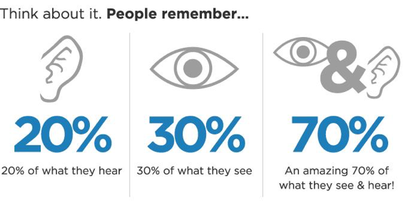
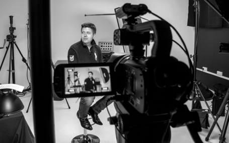

What is corporate video and how it can be used?

People are always more efficient with pictures or sounds than with texts. But when pictures and sounds are combined together, people can remember about 70% of information from the content. And this is how corporate video gets popular in terms of promoting products, services and company values, and spreading messages within the company internally.
What is corporate video
Corporate video production is a comprehensive term used to define all audio-visual communications used for internal or external corporate messaging commissioned primarily for a use by a company, corporation or organization. A corporate video is often intended for a specific purpose in a corporate or B2B environment and viewed only by a limited or targeted audience. This may include product, service and/or company promotional videos, training videos and information videos. One way that corporative videos can be distinguished from other promotional videos is that corporative videos emphasize more on overall company image instead on only one or several aspects of the company.
Corporate video production is frequently the responsibility of a company marketing or corporate communications manager. Examples of corporate video include staff training and safety videos, promotional/brand films, and financial results videos. The following shows five most commonly-used ways of corporate videos.
1. promotional video
Promotional videos are used to target your existing and potential customers. It conveys the most important information that you want your customers to learn and to remember, which is usually a specific corporate initiative, service, and/or products. Promotional video helps you to grow your brand/product awareness, to get your customers familiar with your company image or product features. A promotion video, along with effective video marketing strategy, usually helps a company to get higher sales. An example from G’est Media is an introduction video filmed for Capital International Academy. This promotion video shows the potential students and parents an overall image of the school and its surrounding. Audience can easily picture the students’ life there.
2. training video
Different with promotion video, audience of training videos are often employees in the company. Training videos are used to educating or upskilling employees or new crews, such as instructions of safety workplace, company policies, code of conduct, or health benefits. Training video has become an extremely popular way of training staff as it is more efficient than company handbooks, and it lowers costs compared to in person training.
3. internal communication video
Similar as training video, internal communication videos are created for employees within the company. An internal communication video can be the latest financial results or blueprint of the company, or latest internal changes that are being made at the company. Internal communication videos helps you save the employees time from reading bunches of words from the intranet site or check from piles of company emails. Video can be very effective for internal communications because employees can get more information faster from pictures with sounds compared to text.
4. conference video and event video
Conference videos and event videos can be used to deliver information to attendees or as a record for future reference. Conference video and event video are usually played during presentations, in trade booths or displayed in other locations around the conference venue, or on company’s weblog for customers’ view. Such videos help company to create a timeline-based visual recording as well. This is an event video produced for China Fishing Online to record the summer fishing competition. The video was further displayed on its forum for its members to review the competition and also on following events as an introduction of the competition. With this video, people who are interested in fishing can get more information about the competition. And it also helps the organization to promote the fishing sports and its activities.
5. 1. Company value videos
Company value videos are used to build and promote the positive social responsible image to the public. It includes company value videos, company mission videos, and corporate social responsibility (CSR) videos. Businesses, nowadays, have becoming increasingly involved in social initiatives which have a positive impact to society. A company value video can be used to communicate both to internal audiences as training materials and to external customers because it helps company to easily spread out their good actions.
New technology of video and online platforms provides customers new ways to consume product, and more ways for business to communicate with both internal and external audiences. Corporate videos are a different way rather than traditional corporate communication, and it is evolving very fast. The past years data shows that social media users such as users on Facebook and Twitter had increasing and lager consumption on video than on text. In G’est Media, we are also working hard to provide the cut-edged filming skills and innovative creations to our customers, as well as developing on even newer technologies such as 360 video and VR (Virtual Reality). We believe that we will help our customer created more business opportunities with our productions.